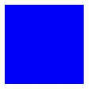
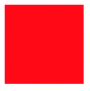
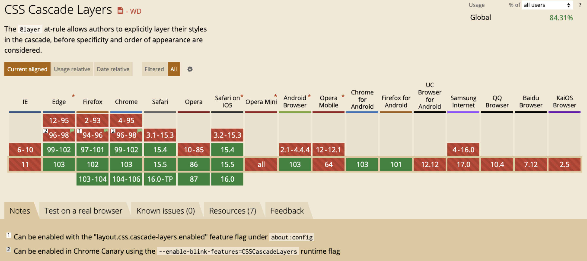

1. 写在前面
你是不是有时候会被样式覆盖问题所困绕？写了样式但是不生效，检查一下发现被一个权重更高的覆盖了。
所以开始加权重，增加类，甚至经常用!important。
项目代码越来越多时，!important也跟着多了起来，后面又该怎么整理呢？
2. 级联层
CSS出现一个新规则：@layer。它声明了一个 级联层, 同一层内的规则将级联在一起， 这给予了开发者对层叠机制的更多控制。
⚠️ 不同级联层内的属性，无权重之分
举个例子
看这个例子，如果同时为同一个div设置background-color属性，肯定是展示下面的颜色，因为相同层级，后面的生效，背景色是红色。
通过用@layer声明了层级后，最终样式可以被控制的。
1 |
|
效果图

3. 语法
两种声明方式
1 | 1. @layer Name { css }; |
3.1 案例解释
3.1.1 声明后即给出代码块
1 | @layer B { |
效果

这是最基础的用法，最终效果是红色，也是因为相同层级，后面的生效，层级R在层级B后面，就把B内的属性覆盖了。这样其实layer作用并不明显。如果想以B内的属性优先，看下面的例子。
3.1.2 多个层级块同时被声明
先声明多个层级，再在下面写对应的层级块，类似于var和let先声明后赋值。
⚠️这种写法比较方便，优先级：写在后面 > 写在前面，现在下面例子的背景色是蓝色，如果改成@layer B, R;，则展示红色
1 | @layer R, B; /* 先声明两个层级B和R */ |
3.1.3 外联样式也可以被声明
下例，引入外部样式，声明层级G，其效果与上例类似，最终是以@layer B, R, G;的顺序展示。
同样遵循写在后面 > 写在前面的优先级。
1 | /* index.css */ |
效果图
3.2 其他情况
- 非级联层权重比级联层权重高；
- 级联层内的权重。级联层内无id，类等权重之分；
- 层级嵌套时，二级层级外的属性属于一级内的非级联层，权重高于二级层级；
- 匿名级联层，创建时被声明，权重看顺序(效果与3.1.1案例一致)；
- 级联层内的
!important，与非级联层内的效果相反。
1 | 1. 非级联层权重比级联层权重高 |
4. 总结
若项目中引入外部的样式，可以用级联层包裹，方便项目内的样式覆盖。
但是兼容性要考虑一下，根据项目实际需求使用。
